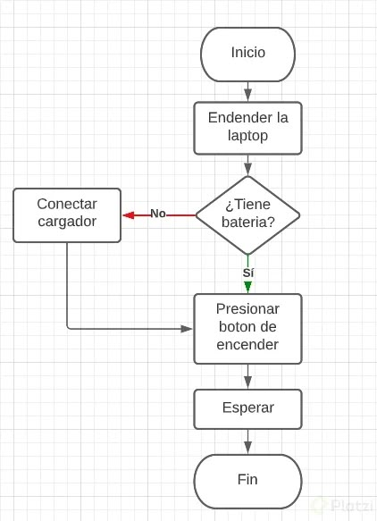
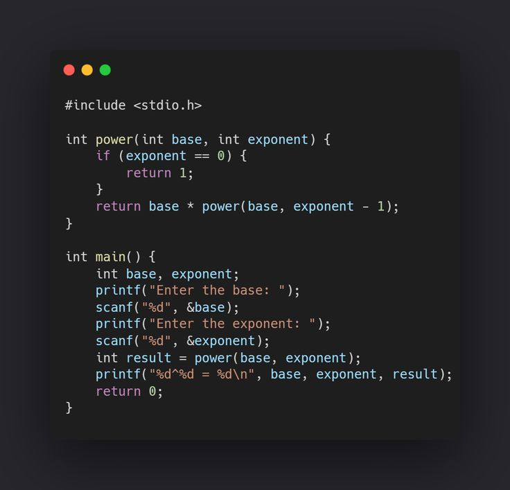
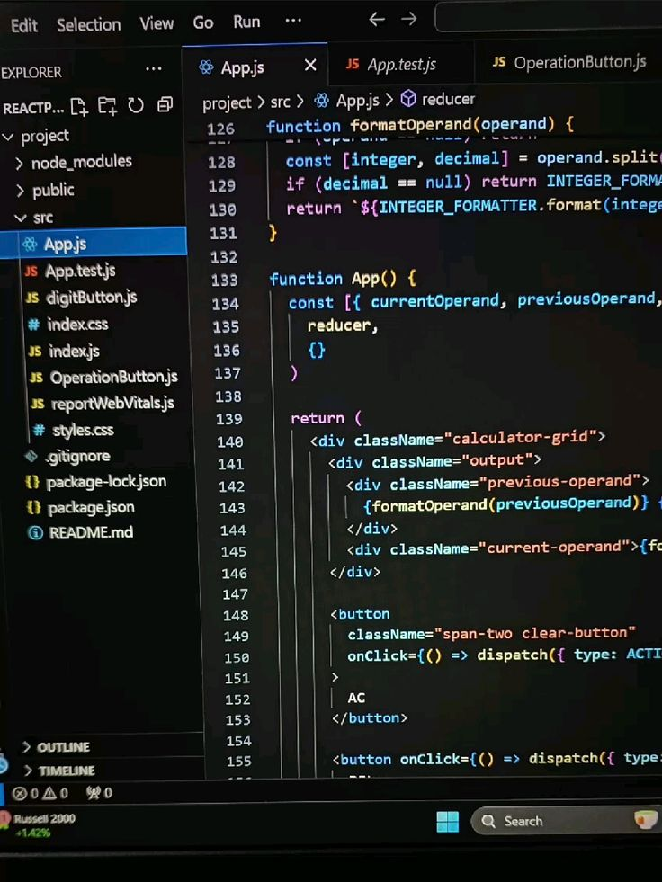

Submódulo 1: Construye algoritmos para la solución de problemas
En este submódulo adquirirás las habilidades fundamentales para diseñar algoritmos que resuelvan problemas de manera eficiente. Un algoritmo es una secuencia ordenada de pasos que describe cómo realizar una tarea o resolver un problema, y aquí aprenderás a crearlo desde cero, utilizando un enfoque lógico y sistemático que es la base de la programación estructurada.
El objetivo es que desarrolles un pensamiento algorítmico sólido, identificando los pasos necesarios para solucionar problemas cotidianos o técnicos, ya sea calcular un promedio, ordenar una lista o planificar una tarea. Este proceso no solo te prepara para programar, sino que también mejora tu capacidad de análisis y resolución de problemas en cualquier ámbito.
Contenidos clave:
- Conceptos básicos de algoritmos: Aprenderás qué es un algoritmo, sus características (precisión, finitud, claridad) y cómo se diferencia de un programa.
- Diagramas de flujo: Representarás procesos mediante símbolos gráficos (como óvalos para inicio/fin, rombos para decisiones y rectángulos para acciones), practicando con ejemplos como calcular el área de un triángulo o verificar si un número es par.
- Pseudocódigo: Escribirás soluciones en un lenguaje intermedio entre el humano y la máquina, usando estructuras como "Inicio", "Fin", "Si-Entonces" y "Mientras", por ejemplo, para simular un cajero automático.
- Lógica computacional: Resolverás ejercicios que requieran decisiones lógicas (¿es mayor de edad?), combinaciones de condiciones (AND, OR, NOT) y optimización de pasos.

Submódulo 2: Aplica estructuras de control con un lenguaje de programación
Este submódulo te introduce al uso de estructuras de control, que son herramientas esenciales para dirigir el flujo de ejecución de un programa. Con ellas, podrás hacer que tu código tome decisiones, repita tareas o se adapte a diferentes escenarios, transformando algoritmos estáticos en soluciones dinámicas e interactivas.
Aplicarás estas estructuras en un lenguaje de programación estructurado (como C, Java o Python), aprendiendo su sintaxis y lógica. Por ejemplo, podrías programar un sistema que calcule descuentos según el monto de una compra o que imprima los números del 1 al 100 automáticamente. Este conocimiento es clave para desarrollar software funcional y eficiente.
Estructuras que aprenderás:
- Condicionales (if, else, switch): Controlarás decisiones simples (si llueve, lleva paraguas) y complejas (evaluación de calificaciones con rangos: A, B, C). Practicarás con ejemplos como verificar si un año es bisiesto.
- Ciclos (while, do-while, for): Automatizarás tareas repetitivas, como sumar números hasta que el usuario lo decida (while), o generar tablas de multiplicar (for). Compararás sus usos según el problema.
- Anidamiento: Combinarás estructuras (un if dentro de un for) para resolver problemas más avanzados, como encontrar números primos en un rango.
- Aplicación práctica: Escribirás programas completos, como un menú interactivo o un contador regresivo, usando un lenguaje real y depurando errores comunes.

Submódulo 3: Aplica estructuras de datos con un lenguaje de programación
En este submódulo explorarás cómo organizar y manipular datos dentro de un programa usando estructuras de datos básicas. Estas herramientas te permiten almacenar información (como listas de nombres, calificaciones o inventarios) de forma ordenada y acceder a ella cuando sea necesario, optimizando el rendimiento del software.
Trabajarás con un lenguaje de programación estructurado para implementar estas estructuras, aprendiendo a declararlas, llenarlas con datos, modificarlas y recorrerlas. Por ejemplo, podrías crear un programa que ordene una lista de estudiantes alfabéticamente o que calcule el promedio de una matriz de calificaciones. Este submódulo te prepara para manejar proyectos más grandes y complejos.
Temas principales:
- Arreglos (arrays): Almacenarás datos del mismo tipo en una sola variable (ejemplo: notas de 10 alumnos) y practicarás operaciones como buscar el mayor o sumar todos los elementos.
- Matrices: Trabajarás con arreglos bidimensionales (filas y columnas), como una tabla de ventas mensuales, aprendiendo a recorrerlas con ciclos anidados.
- Recorridos y manipulación: Usarás ciclos para acceder a cada elemento (imprimir, modificar, eliminar), por ejemplo, para contar cuántos números pares hay en un arreglo.
- Selección adecuada: Analizarás cuándo usar un arreglo simple o una matriz según el problema, como representar un tablero de ajedrez (matriz) versus una lista de tareas (arreglo).
- Proyectos prácticos: Desarrollarás programas como un sistema de inventario básico o un analizador de estadísticas, integrando estructuras de datos con estructuras de control.
